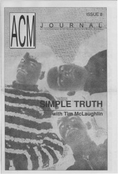
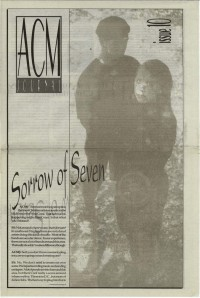

ACM Journal
1992
| Cover |
|---|
|  |
| Writers in this Issue |
| Morison, Jennifer |
#8
Article:- "Angels Fall - Taproot Theatre" by Jennifer Morison
- "Indep't Artists"advice for unsigned/new bands, including equipment and money, recording and mastering, promotion and distribution
- "Simple Truth"
| Cover |
|---|
 |
| Writers in this Issue |
| Power, Bill Stephenson, Tom D. |
#9
Cover Feature:- Over the Rhine by Tom D. Stephenson
- "The Censorship Lie" by Bill Poweron expression, censorship, and prohibition
- "Fred: Portrait of an Artist"Fred Thomas
| Cover |
|---|
|  |
| Writers in this Issue |
| Ellner, Mark Power, Bill Stephenson, Tom D. |
#10
Article:- "The Death of the Christian Music Industry: A Lesson In Economics" by Bill Powercommentary on whether Christian Music is reaching the lost
- "Photospectve" by Mark EllnerCommentary on press access to music festivals; Cornerstone
- "Where Can Our Sheep Mentality Lead?... Flocking Toward the Edge"Commentary on the state of Christian radio, publications, concerts, and labels; Relevance of Christian Music in the 1990s
- Sorrow of Seven by Tom D. Stephenson
This is the final issue of ACM Journal.
© 2011 CMnexus. Last updated May 2025. Contact: editor -AT- cmnexus -DØT- org